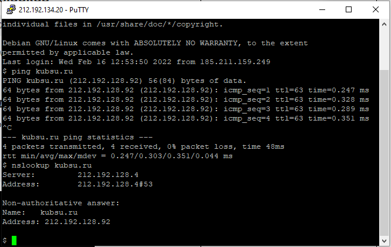
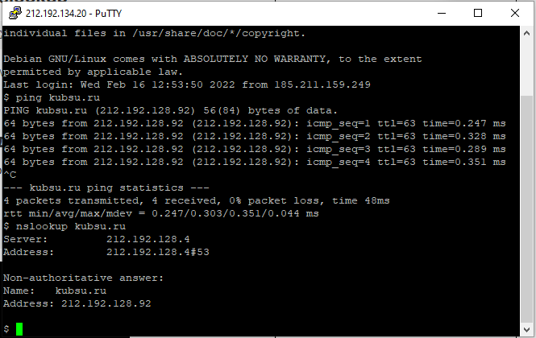

Использование утилиты Putty для подключения к учебному серверу
Использование команды ping для отправки запросов kubsu.ru с целью установления время отклика
 

Использование команды nslookup по умолчанию которая возвращает A запись то есть показывает ip адресс сайта kubsu.ru
Использование команды nslookup c опцией -query=mx для определения почтового сервиса домена kubsu.ru
Использование команды nslookup по умолчанию которая возвращает A запись то есть показывает ip адресс сайта kubsu-dev.ru

Использование команды nslookup c опцией -query=mx для определения почтового сервиса домена kubsu-dev.ru

Использование команды whois идля определения информации о владенльце домена kubsu.ru
Загрузка файлов на учебный сервер с помощью git clone
Использование команды whois идля определения информации о владенльце домена kubsu-dev.ru
Использование filezila для подключения к серверу kubsu-dev.ru для скачивания файлов с сервера